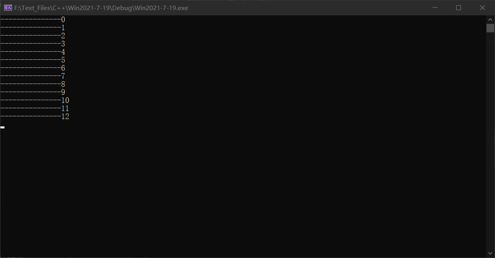
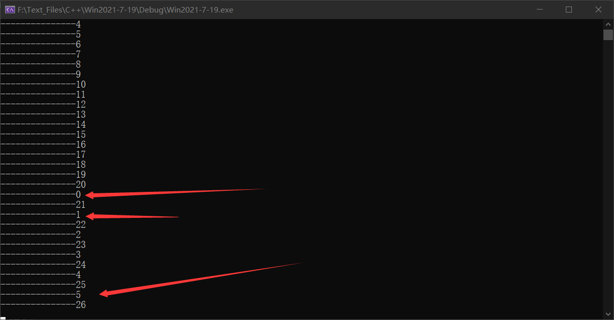

# 远程线程函数 CreateRemoteThread
CreateRemoteThread 是一个 Windows API 函数，它能够创建一个在其它进程地址空间中运行的线程。
# 函数原型
HANDLE WINAPI CreateRemoteThread( | |
__in HANDLE hProcess, | |
__in LPSECURITY_ATTRIBUTES lpThreadAttributes, | |
__in SIZE_T dwStackSize, | |
__in LPTHREAD_START_ROUTINE lpStartAddress, | |
__in LPVOID lpParameter, | |
__in DWORD dwCreationFlags, | |
__out LPDWORD lpThreadId | |
); |
# 参数说明
hProcess [in]
线程所属进程的进程句柄.
该句柄必须具有 PROCESS_CREATE_THREAD, PROCESS_QUERY_INFORMATION, PROCESS_VM_OPERATION, PROCESS_VM_WRITE, 和 PROCESS_VM_READ 访问权限.lpThreadAttributes [in]
一个指向 SECURITY_ATTRIBUTES 结构的指针，该结构指定了线程的安全属性.dwStackSize [in]
线程栈初始大小，以字节为单位，如果该值设为 0, 那么使用系统默认大小.lpStartAddress [in]
在远程进程的地址空间中，该线程的线程函数的起始地址.lpParameter [in]
传给线程函数的参数.dwCreationFlags [in]
线程的创建标志
| 值 | 含义 |
|---|---|
| 0 | 线程创建后立即运行 |
| CREATE_SUSPENDED 0x00000004 | 线程创建后先将线程挂起，直到 ResumeThread 被调用. |
| STACK_SIZE_PARAM_IS_A_RESERVATION 0x00010000 | dwStackSize 参数指定为线程栈预订大小，如果 STACK_SIZE_PARAM_IS_A_RESERVATION 没有被指定，dwStackSize 参数指定为线程栈分配大小. |
- lpThreadId [out]
指向所创建线程 ID 的指针，如果创建失败，该参数为 NULL.
# 函数返回值
如果调用成功，返回新线程句柄.
如果失败，返回 NULL.
# 示例
先创建一个进程，使其执行一个线程。
创建远程线程的程序
#include<Windows.h> | |
#include<stdio.h> | |
#include<TlHelp32.h> | |
#include<assert.h> | |
#include<tchar.h> | |
// 获取进程 name 的 ID | |
DWORD getPid(LPTSTR name) | |
{ | |
HANDLE hProcSnap = CreateToolhelp32Snapshot(TH32CS_SNAPPROCESS, 0);// 获取进程快照句柄 | |
assert(hProcSnap != INVALID_HANDLE_VALUE); | |
PROCESSENTRY32 pe32; | |
pe32.dwSize = sizeof(PROCESSENTRY32); | |
BOOL flag = Process32First(hProcSnap, &pe32);// 获取列表的第一个进程 | |
while (flag) | |
{ | |
if (!_tcscmp(pe32.szExeFile, name)) | |
{ | |
CloseHandle(hProcSnap); | |
return pe32.th32ProcessID;//pid | |
} | |
flag = Process32Next(hProcSnap, &pe32);// 获取下一个进程 | |
} | |
CloseHandle(hProcSnap); | |
return 0; | |
} | |
BOOL MyRemoteThread(LPTSTR tcProcName) { | |
// 获取进程 id | |
DWORD dwProcId; | |
dwProcId = getPid(tcProcName); | |
if (dwProcId == 0) | |
{ | |
printf("getPid Error!!"); | |
exit(0); | |
} | |
// 获得进程句柄 | |
HANDLE hProcess = OpenProcess(PROCESS_ALL_ACCESS, NULL, dwProcId); | |
if (hProcess == 0) | |
{ | |
printf("OpenProcess Error!\n"); | |
exit(0); | |
} | |
HANDLE hThread = CreateRemoteThread( | |
hProcess, | |
NULL, | |
NULL, | |
(LPTHREAD_START_ROUTINE)0x007317F0, | |
NULL, | |
NULL, | |
NULL | |
); | |
if (hThread == NULL) | |
{ | |
printf("CreateRemoteThread Error \n"); | |
CloseHandle(hProcess); | |
return FALSE; | |
} | |
CloseHandle(hThread); | |
CloseHandle(hProcess); | |
return TRUE; | |
} | |
int main() { | |
MyRemoteThread((LPTSTR)TEXT("Win2021-7-19.exe")); | |
} |
Win2021-7-19.cpp
被创建远程线程的程序
#include<Windows.h> | |
#include<stdio.h> | |
void test() { | |
int n = 0; | |
while (1) { | |
printf("---------------%d\n", n++); | |
Sleep(1000); | |
} | |
} | |
DWORD WINAPI ThreadProc(LPVOID lpParameter) { | |
test(); | |
return 0; | |
} | |
int main() { | |
HANDLE hThread = CreateThread(NULL, NULL, ThreadProc, NULL, NULL, NULL); | |
CloseHandle(hThread); | |
getchar(); | |
return 0; | |
} |
创建远程线程前

创建远程线程后
